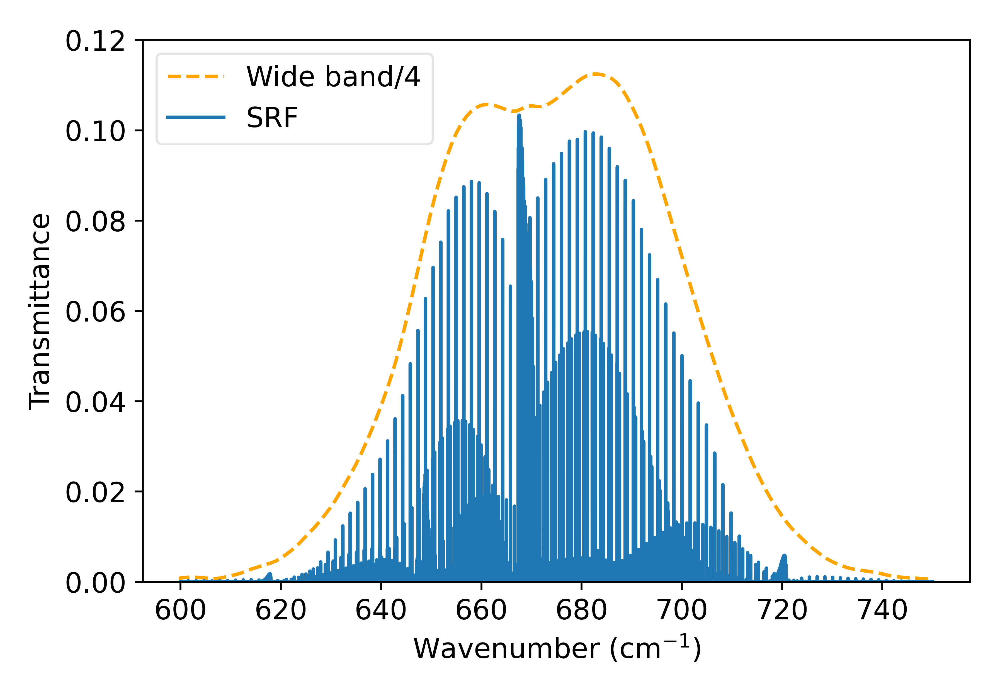

Updated radiative transfer modelling to simulate instruments from the 1970s
the Pressure Modulated Radiometer (PMR) and the Stratospheric Sounding Unit (SSU)
Valentin Jules
Copernicus Climate Change Service
Instrument of the 70s
Objectives
Simulate the radiometer using LBLRTM
Modelize the instrument measurement with RTTOV
ERA-6 re analysis
PMR
Measurements principles

Spectral Response Function

Spectral Response Function

Weighting Functions Nadir, profil83


Weighting Functions Nadir, profil83

Weighting Functions Nadir, profil83

Doppler Scanning
\begin{equation}
\nu = \nu_e \left( 1 + \dfrac{v \cos(\theta)}{c} \right)
\end{equation}
\begin{equation}
\nu = \nu_e \left( 1 + \dfrac{v \cos(\pi/2 - \alpha}{c} \right)
\end{equation}
\begin{equation}
\nu = \nu_e \left( 1 + \dfrac{v \sin(\alpha}{c} \right)
\end{equation}
Doppler Scanning

Doppler Scanning

Doppler Scanning

Doppler Scanning

Doppler Scanning

Doppler Scanning

Doppler Scanning

RTTOV profils

RTTOV Simulated Brightness Temperature